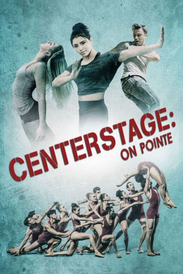
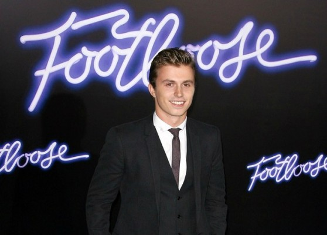
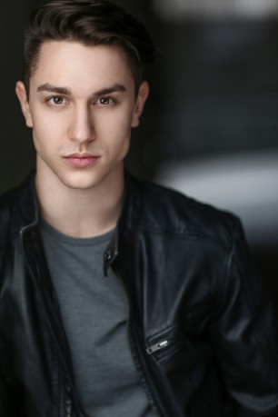
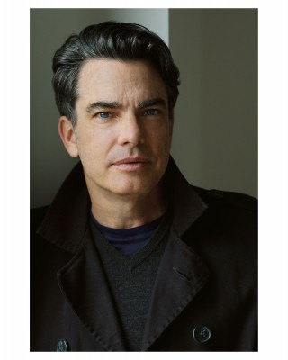
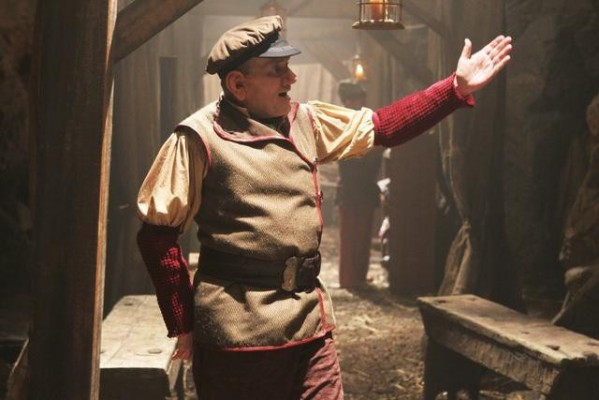

#5184 Center Stage - On Pointe
 
 IMDB-Wertung: 6.0 / 10
IMDB-Wertung: 6.0 / 10  Metascore: 0
Metascore: 0 
Jonathan Reeves (Peter Gallagher) wurde beauftragt, der American Ballet Academy einen zeitgenössischen und modernen Stil einzuhauchen. Dafür beruft er seine besten Choreografen Charlie (Sascha Radetsky), Cooper (Ethan Stiefel) und Tommy (Kenny Wormald) ein. Ihre Aufgabe ist es, Tänzer anzuwerben, die in einem Wettkampf gegeneinander antreten sollen. Den Gewinnern wird die Ehre zuteil, der Academy beitreten zu dürfen. Bella Parker (Nicole Muñoz) lebte bisher stets im Schatten ihrer überaus erfolgreichen Schwester Kate. Mit der Einladung zu diesem Wettkampf erhält sie endlich die Chance, ihr ganzes Können unter Beweis zu stellen.
Jahr: 2016
Dauer: 88 Minuten
FSK: 0
Land: USA Studio: Lifetime TelevisionTonspuren:
Untertitel: Deutsch,
Auflösung: SD (720x404) Größe: 904 MB
Genre: Drama, Musik
Regisseur: Director X.
Drehbuch: Lars Boom
Soundtrack:
Darsteller:
 Nicole Muñoz als Bella Parker
Nicole Muñoz als Bella Parker-  Kenny Wormald als Tommy
- Barton Cowperthwaite als Damon
- Chloe Lukasiak als Gwen Murphy
 Rachele Brooke Smith als Kate Parker
Rachele Brooke Smith als Kate Parker- Sarah-Jane Redmond als Lorenza, Ballet Teacher
- Maude Green als Allegra
- Kyle Toy als Ivan
- Kyal Legend als Candie
- Thomas L. Colford als Richard
-  Kane Nelson als Sam
- Sascha Radetsky als Charlie
- Ethan Stiefel als Cooper
-  Peter Gallagher als Jonathan Reeves
- Gabrielle Rose als Beverly
-  Ken Kramer als Myron
- Tara Wilson als Yoga Instructor
- Lanie McAuley als Wendy
- Cierra Monroe als Opening Dancer
- Sara Carver als Opening Dancer
- Brooke Williamson als Camp Ballet Dancer
- Ian Thompson als Bus Driver , uncredited
- Emma Stewart als Opening Dancer
- Emily Read als Opening Dancer
- Lauren Phillips als Opening Dancer
- Kiona Graham als Opening Dancer
- Lauren Rose als Opening Dancer
- Letizia Dotto als Opening Dancer
- Sarah Tse als Opening Dancer
- Sophia Shaw als Opening Dancer
- Tristan Ghostkeeper als Opening Dancer / Camp Modern Dancer / Closing Dancer
- Mariana Moraes Santos als Camp Ballet Dancer
- Joshua Haban als Camp Ballet Dancer
- Alexei Geronimo als Closing Dancer
- Brandi Baker als Closing Dancer
- Ariana Barr als Closing Dancer
- Desi Rekrut als Closing Dancer
- Jee Lam als Closing Dancer
- Justin Calvadores als Closing Dancer
- Ria Girard als Closing Dancer
- Shana Wolfe als Closing Dancer
- Thys Armstrong als Closing Dancer
- Zachary Caldwell als Closing Dancer
- Peter Brown als Instructor , uncredited
Datei: X:\3-Trilogie(A-F)\Center Stage\Center Stage - On Pointe (2016, FSK0, 720x404).mkv seit 28.12.2016
Festplatte: HD Collection-2(A-Z)-3(A-M)
 Alle Filme aus Gruppe '3-Trilogie(A-F)\Center Stage'
Alle Filme aus Gruppe '3-Trilogie(A-F)\Center Stage'